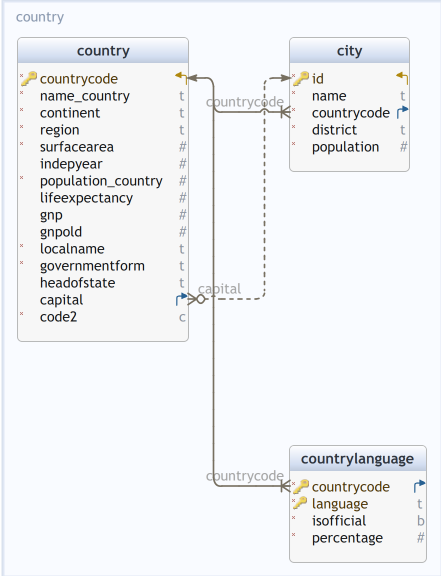

BD VII: Corriger le schéma World
Définition de données: Contraintes/Ingénieurie
2024-10-25
Revisiter le schéma world
Schema de world
Schema World en pattes de corbeau
Conraintes sur la table country
Un pays est identifié par son
countrycodeDeux pays ne devraient pas avoir le même nom
Une région ne devrait appartenir qu’à un seul continent
La capitale d’un pays devrait être une ville connue dans
cityLa capitale d’un pays devrait être une ville de ce pays
Les capitales de deux pays différents devraient être des villes différentes
…
Ce ne sont pas les seules contraintes possibles
Mise en œuvre des contraintes
Un pays est identifié par son
countrycode:PRIMARY KEYDeux pays ne devraient pas avoir le même nom :
UNIQUEUne région ne devrait appartenir qu’à un seul continent : ???
La capitale d’un pays devrait être une ville connue dans
city:REFERENCESLa capitale d’un pays devrait être une ville de ce pays : ???
Les capitales de deux pays différents devraient être des villes différentes :
UNIQUEDeux pays différents ne peuvent avoir le même
code2:UNIQUE
Examen du schema de country
+--------------------+---------------+-----------+----------+--------------+-------------+
| Column | Type | Modifiers | Storage | Stats target | Description |
|--------------------+---------------+-----------+----------+--------------+-------------|
| countrycode | character(3) | not null | extended | <null> | <null> |
| name_country | text | not null | extended | <null> | <null> |
| continent | text | not null | extended | <null> | <null> |
| region | text | not null | extended | <null> | <null> |
| surfacearea | real | not null | plain | <null> | <null> |
| indepyear | smallint | | plain | <null> | <null> |
| population_country | integer | not null | plain | <null> | <null> |
| lifeexpectancy | real | | plain | <null> | <null> |
| gnp | numeric(10,2) | | main | <null> | <null> |
| gnpold | numeric(10,2) | | main | <null> | <null> |
| localname | text | not null | extended | <null> | <null> |
| governmentform | text | not null | extended | <null> | <null> |
| headofstate | text | | extended | <null> | <null> |
| capital | integer | | plain | <null> | <null> |
| code2 | character(2) | not null | extended | <null> | <null> |
+--------------------+---------------+-----------+----------+--------------+-------------+Un schéma de table ne se réduit pas à la données des noms et domaines des colonnes
(continued)
Indexes:
"country_pkey" PRIMARY KEY, btree (countrycode)
Check constraints:
"country_continent_check" CHECK (continent = 'Asia'::text OR
continent = 'Europe'::text OR
continent = 'North America'::text OR
continent = 'Africa'::text OR
continent = 'Oceania'::text OR
continent = 'Antarctica'::text OR
continent = 'South America'::text),
Foreign-key constraints:
"country_capital_fkey" FOREIGN KEY (capital) REFERENCES city(id)
"country_fk" FOREIGN KEY (continent) REFERENCES code_continent(continent)DDL pour country
CREATE TABLE world.country (
countrycode bpchar(3) NOT NULL,
name_country text NOT NULL,
continent text NOT NULL,
region text NOT NULL,
surfacearea float4 NOT NULL,
indepyear int2 NULL,
population_country int4 NOT NULL,
lifeexpectancy float4 NULL,
gnp numeric(10, 2) NULL,
gnpold numeric(10, 2) NULL,
localname text NOT NULL,
governmentform text NOT NULL,
headofstate text NULL,
capital int4 NULL,
code2 bpchar(2) NOT NULL,
CONSTRAINT country_continent_check CHECK (((continent = 'Asia'::text)
OR (continent = 'Europe'::text)
OR (continent = 'North America'::text)
OR (continent = 'Africa'::text)
OR (continent = 'Oceania'::text)
OR (continent = 'Antarctica'::text)
OR (continent = 'South America'::text))),
CONSTRAINT country_pkey PRIMARY KEY (countrycode)
);Ajout de contraintes référentielles
-- world.country foreign keys
ALTER TABLE world.country ADD CONSTRAINT
country_capital_fkey FOREIGN KEY (capital) REFERENCES world.city(id);
ALTER TABLE world.country ADD CONSTRAINT
country_fk FOREIGN KEY (continent) REFERENCES world.code_continent(continent); Les contraintes country_capital_fkey et country_fk sont émises par la table country
Contraintes ajoutées
-- world.country foreign keys
ALTER TABLE world.country ADD CONSTRAINT
country_capital_fkey FOREIGN KEY (capital) REFERENCES world.city(id);
ALTER TABLE world.country ADD CONSTRAINT
country_fk FOREIGN KEY (continent) REFERENCES world.code_continent(continent); La contrainte country_fk sur continent remplit la même fonction que la contrainte country_continent_check
Conseil:
- Si le domaine est de grande cardinalité, utiliser une table pour représenter le domaine, et une contrainte référentielle
- Si le domaine est de petite cardinalité, une contrainte
CHECKest aussi pratique (et sans doute plus efficace)
Comment procéder pour mettre en œuvre une contrainte de domaine sur region ?
Une contrainte d’exclusion
Une région n’appartient qu’à un seul continent
Cette contrainte signifie que le résultat de la requête suivante est vide :
SELECT *
FROM
world.country c1
JOIN
world.country c2 ON (c1.continent<> c2.continent AND c1.region=c2.region);On exclut l’existence de deux lignes qui coïncideraient sur region mais pas sur continent
Nous postulons l’existence d’une dépendance fonctionnelle
\[\texttt{region} \longrightarrow \texttt{continent}\]
Deux attitudes
Dans sa forme actuelle, la table country de world contient des informations redondantes: on répète plusieurs fois que la région Western Europe est située dans le continent Europe
Ces redondances représentent un gaspillage de mémoire (très modeste ici) et un risque pour le maintien de la cohérence de la base : chaque insertion, mise-à-jour est susceptible de mettre en défaut la dépendance fonctionnelle
On peut considérer qu’il s’agit d’une anomalie de schéma et normaliser le schéma.
La normalisation suppose une révision du schéma. Si le schéma est muni de vues et de fonctions, il faudra éventuellement réécrire ces vues et ces fonctions.
On peut mettre en place une contrainte d’exclusion avec EXCLUDE.
De cette façon, on ne touchera pas au schéma, les vues et les fonctions resteront utilisables. La contrainte d’exclusion permettra de maintenir la dépendance fonctionnelle.
Les contraintes d’exclusion
Objectifs
- Mise en place des dépendances fonctionnelles
- Mise en place de contraintes de non-recouvrement (données spatiales ou temporelles)
- Mise en place de contraintes très diverses
Comment ?
L’ajout d’une contrainte d’exclusion crée automatiquement un index du type spécifié dans déclaration de constrainte
Détails syntaxiques
EXCLUDE
[ USING index_method ]
( exclude_element WITH operator [, ... ] )
index_parameters
[ WHERE ( predicate ) ] Note
La clause EXCLUDE définit une contrainte d’exclusion qui garantit que si deux lignes sont comparées sur la ou les colonnes spécifiées ou des expressions utilisant le ou les opérateurs spécifiés, seulement certaines de ces comparaisons, mais pas toutes, renverront TRUE.
Remarques
Si tous les opérateurs spécifiés testent une égalité, ceci est équivalent à une contrainte UNIQUE bien qu’une contrainte unique ordinaire sera plus rapide.
Néanmoins, ces contraintes d’exclusion peuvent spécifier des contraintes qui sont plus générales qu’une simple égalité.
Vous pouvez spécifier qu’il n’y a pas deux lignes/tuples dans la table contenant des cercles se recouvrant surcharge en utilisant l’opérateur &&.
Le(s) opérateur(s) doivent être commutatif(s).
Mise en œuvre
Les contraintes d’exclusion sont implantées en utilisant un index qui a le même nom que la contrainte, donc chaque opérateur précisé doit être associé avec une classe d’opérateurs appropriée pour la méthode d’accès par index, nommée méthode_index.
Chaque élément_exclusion définit une colonne de l’index, donc il peut spécifier en option une collation, une classe d’opérateur, des paramètres pour la classe d’opérateurs, et/ou des options de tri
En pratique, la méthode d’accès sera toujours GiST ou SP-GiST (GIST est un acronyme qui renvoie à Generalized Search Tree).
Zoologie des index B-tree, hash, GIN
Une stratégie d’indexation permet de gérer efficacement des conditions de la forme
Les index de type B-tree sont appropriés pour les types ordonnés et les opérateurs =, <=, =>
Les index de type B-tree sont souvent utilisés pour réaliser les équi-jointures.
Méthodes d’accès (Index) GiST
GiST: une infrastructure qui permet la mise en œuvre de différentes stratégies d’indexation.
Les opérateurs susceptibles d’utiliser un index GiST peuvent varier selon la stratégie d’indexation
Dans world.country
ALTER TABLE world.country
ADD CONSTRAINT xcl_country_region_continent
EXCLUDE USING GIST (
region WITH =,
continent with <>
) ;Avec cette contrainte d’exclusion, on interdit la présence de deux tuples dand la table country, coïncidant sur la colonne region mais pas sur la colonne continent.
Autre exemple
Question
Comment utiliser les contraintes d’exclusion pour préciser que deux colonnes sont liées par une relation de monotonie ?
Normalisation de \(\texttt{country}\)
La normalisation des bases de données relationnelles est une activité en soi, guidée par des principes codifiés et des algorithmes établis (voir Normalisation I, Normalisation II)
Ici, nous profitons de la simplicité du schéma world pour normaliser country à la main.
Éclatement de la table country
Mise en place d’une table
region_continent(region, continent)Émission d’une contrainte référentielle de
countryversregion_continent
Préparation
CREATE SCHEMA monde AUTHORIZATION superdupont ;
GRANT ALL ON SCHEMA monde TO superdupont ;
CREATE TABLE monde.code_continent AS
TABLE world.code_continent ;
ALTER TABLE monde.code_continent ADD CONSTRAINT
code_continent_pk PRIMARY KEY (codecontinent);
ALTER TABLE monde.code_continent ADD CONSTRAINT
code_continent_un UNIQUE (continent);Création de region_continent
La requête suivante renvoie une table vide:
Création de la table monde.country
CREATE TABLE monde.country AS
SELECT
countrycode, name_country, region, surfacearea,
indepyear, population_country,
lifeexpectancy, gnp, gnpold, localname,
governmentform, headofstate, capital, code2
FROM
world.country ; sans colonne continent
Mise en place des contraintes sur monde.country
ALTER TABLE monde.country ADD CONSTRAINT
country_pk PRIMARY KEY (countrycode);
ALTER TABLE monde.country ADD CONSTRAINT
country_un_name UNIQUE (name_country);
ALTER TABLE monde.country ADD CONSTRAINT
country_un_code2 UNIQUE (code2);
ALTER TABLE monde.country ADD CONSTRAINT
country_un_capital UNIQUE (capital);Copie de city
On a copié le schéma a minima (sans les contraintes)
Dans un pays plusieurs villes peuvent elles porter le même nom ?
SELECT *
FROM
monde.city c
JOIN
monde.city c2
ON (c.name_city = c2.name_city AND
c.countrycode = c2.countrycode AND
c.id <> c2.id) ;renvoie 48 lignes
Existe-t-il un pays dont la capitale est dans un autre pays ?
SELECT c. countrycode, c.name_country, cc.name_city, cc.countrycode
FROM
world.country c
JOIN
world.city cc
ON (c.capital = cc.id AND
cc.countrycode <> c.countrycode) ;renvoie 0 lignes
Blocages possibles
Si
cityemet une contrainte référentielle surcountry(countrycode)countryemet une contrainte référentielle surcity(capital\(\rightarrow\)id)
Risque de blocage : qui précède la capitale ou le pays ?
Émission de la contrainte de city vers country
Table countrylanguage
ALTER TABLE monde.countrylanguage
ADD CONSTRAINT countrylanguage_fk
FOREIGN KEY (countrycode) REFERENCES monde.country(countrycode)
ON DELETE CASCADE
ON UPDATE CASCADE;
ALTER TABLE monde.countrylanguage
ADD CONSTRAINT countrylanguage_pk
PRIMARY KEY ("language",countrycode);
ALTER TABLE monde.countrylanguage
ADD CONSTRAINT countrylanguage_check
CHECK (percentage <= 100.0 AND percentage >=0.0 );Vues régionales et continentales
Synthèse régionale
Synthèse continentale
SELECT r.*
FROM
monde.regionale r
JOIN
monde.region_continent rc
ON (r.region=rc.region AND rc.continent='Europe') ;+----------------+-----------------+------------------+----------+-------------+
|region |population_region|surfacearea_region|gnp_region|gnpold_region|
+----------------+-----------------+------------------+----------+-------------+
|Western Europe | 183247600| 1108456.5|4673272.00| 4578420.00|
|Southern Europe | 144674200| 1316392.4|2012289.00| 1944737.00|
|Baltic Countries| 7561900| 175117.0| 22418.00| 18595.00|
|Nordic Countries| 24166400| 1321901.0| 676655.00| 677698.00|
|British Islands | 63398500| 313173.0|1454251.00| 1369962.00|
|Eastern Europe | 307026000| 18814094| 659980.00| 792589.00|Synthèse continentale
CREATE OR REPLACE VIEW monde.continentale AS (
SELECT rc.continent,
SUM(r.population_region) AS population,
SUM(r.surfacearea_region) AS surfacearea,
SUM(r.gnp_region) AS gcp,
SUM(r.gnpold_region) AS gcpold
FROM monde.regionale r JOIN monde.region_continent rc
ON (r.region=rc.region)
GROUP BY rc.continent;) ;+-------------+----------+-----------+----------+----------+
|continent |population|surfacearea|gcp |gcpold |
+-------------+----------+-----------+----------+----------+
|South America| 345780000| 17864926|1511874.00|1520641.00|
|North America| 482993000| 24214472|9688627.20|9288175.00|
|Oceania | 30401150| 8564294.0| 419774.70| 469058.00|
|Antarctica | 0| 13132101| 0.00| |
|Africa | 784475000| 30250376| 580375.00| 553264.00|
|Europe | 730074600| 23049132|9498865.00|9382001.00|
|Asia |3705025700| 31881006|7655392.00|8251969.00|Fin
Corriger et commenter un schéma

MA15Y030 – Bases de Données – L3 MIASHS – UParis Cité